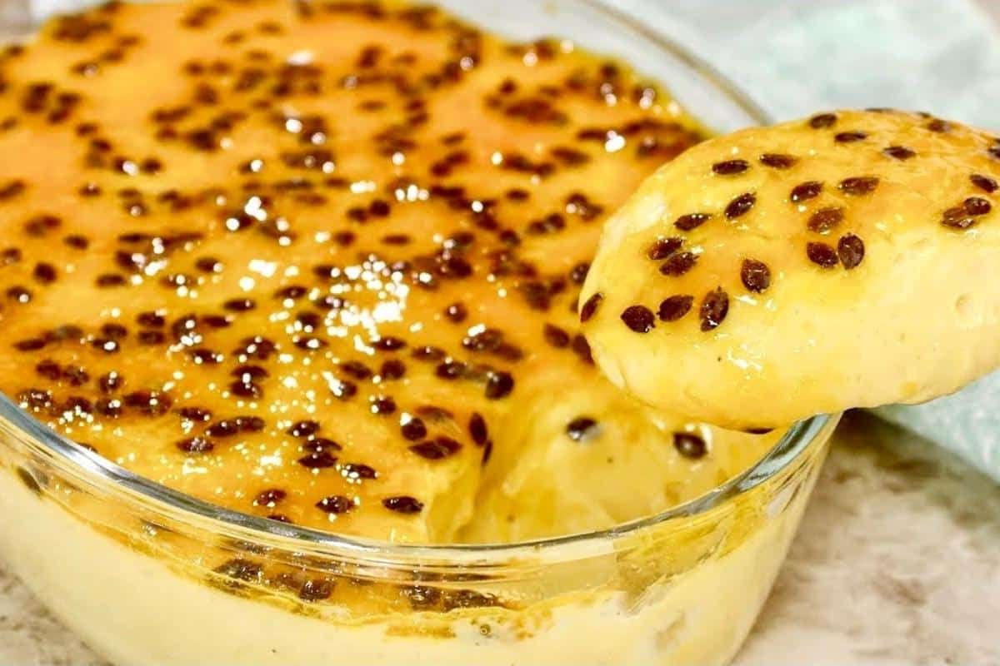

Mousse de Maracujá
Uma sobremesa rápida, refrescante e deliciosa para qualquer ocasião.

Ingredientes
- 1 lata de leite condensado
- 1 lata de creme de leite (natas)
- 1 chávena de sumo de maracujá concentrado
- Sementes de maracujá para decorar (opcional)
Modo de Preparo
- No liquidificador, adicione o leite condensado, o creme de leite e o sumo concentrado de maracujá.
- Bata tudo em velocidade máxima por cerca de 3 a 5 minutos, até obter um creme firme e homogéneo.
- Despeje a mistura numa taça grande ou em taças individuais.
- Leve ao frigorífico (geladeira) por, no mínimo, 2 a 3 horas.
- Decore com sementes de maracujá antes de servir e divirta-se!